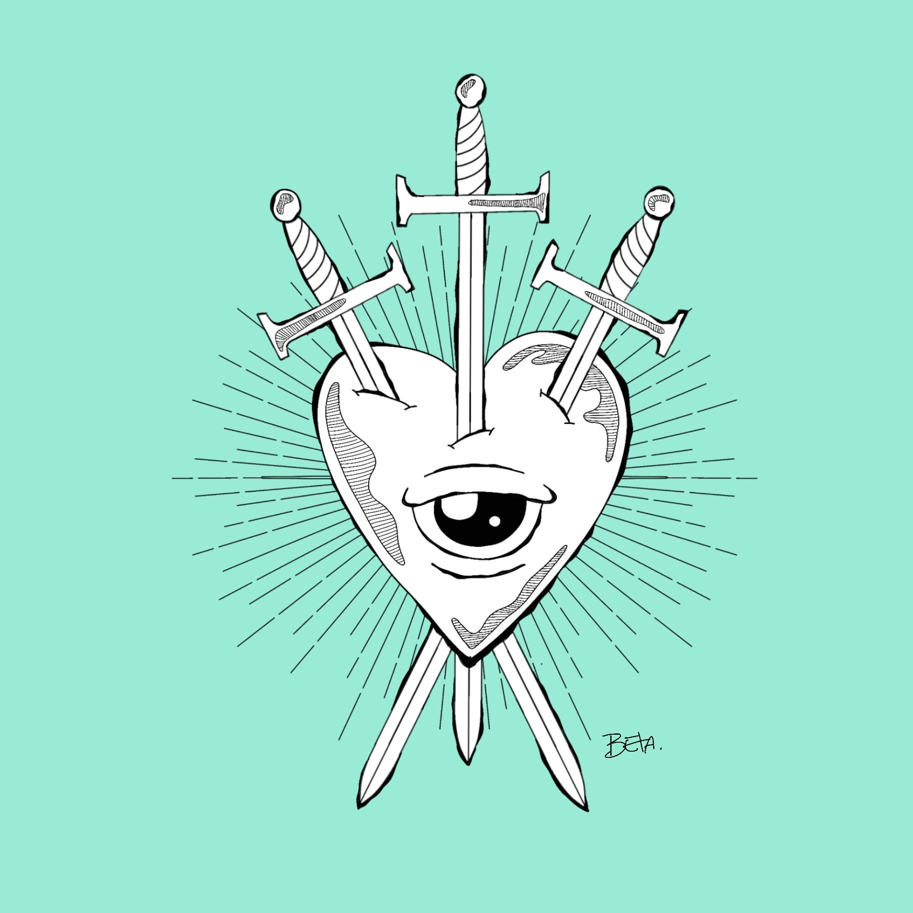

Beta lab
View instagram ++concept++
I always had a passion for drawing. Etiher is the details or the lines quality, I believe there is a lot to express with this simple medium. During my bachelor, we are push to over come challenges with new technologies, but as an individual, I wanted to keep practicing this art. It is important to have a good understanding
of the basics before going further.
++year: 2020-2021
++what: Illustration as The Beta Lab
++Client: It is important to develop new skills with given briefs,
but it was important to me to keep pushing my practice in
a more personal level.
++Skills: Illustration
++Tool: Procreate
Related Projects
Dear lover
Dear lover of mine, please give me access to you before what I left melt away.
Artifice my love
Life is an abstract concept where we are our own master. Write your own story.

Sweet & Spices
Would take a slice of your futur without knowing what the next bite would be?
© 2017 uiCookies:Aside.
All Rights Reserved. Designed by uicookies.com